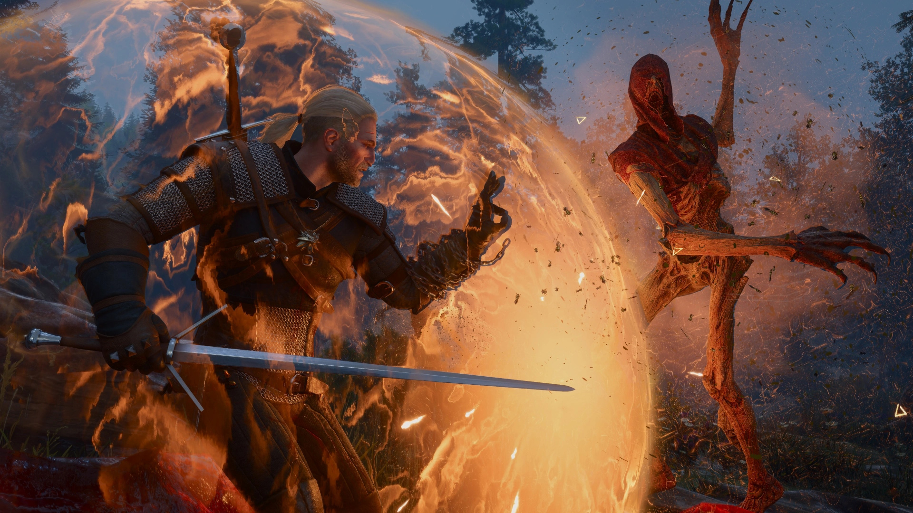
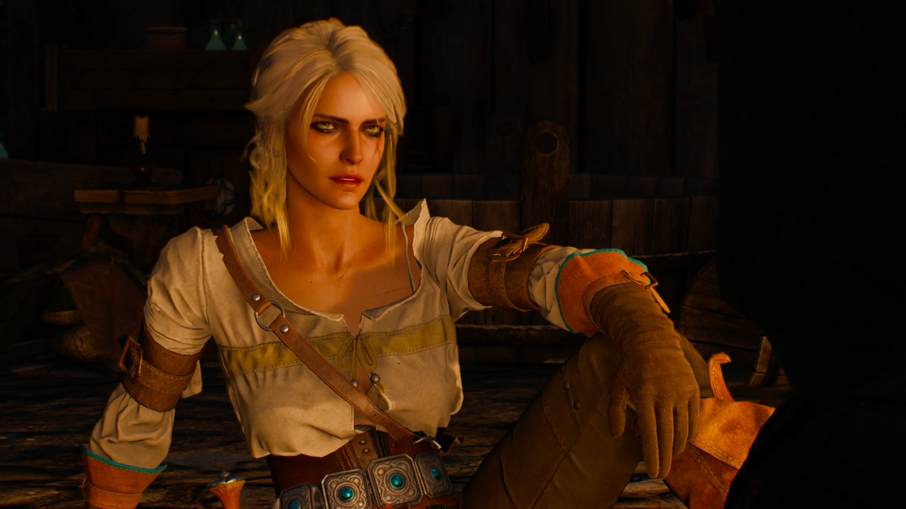
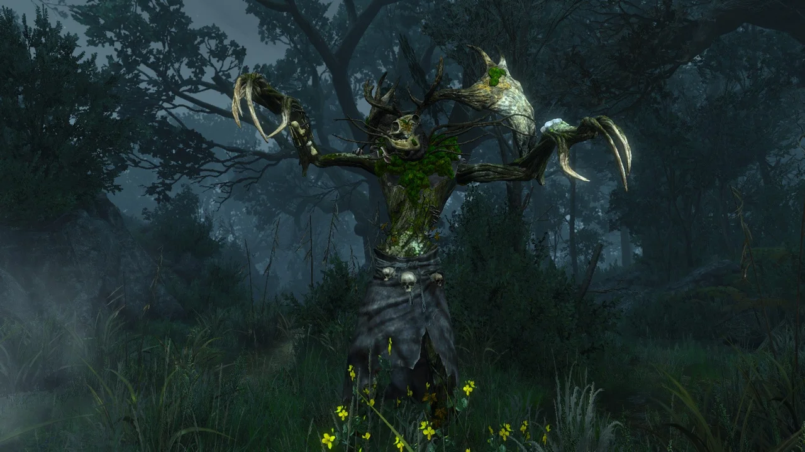

The Witcher 3: Wild Hunt es una aventura de rol ambientada en un mundo fantástico marcado por la guerra, los monstruos y las decisiones difíciles.
Basado en la saga de novelas homónima de Andrzej Sapkowski, el juego sigue la historia de Geralt de Rivia, un cazador de monstruos mutante conocido como brujo y protagonista de los libros. Es la obra más grande de la literatura polaca del siglo XX.
Tras los eventos de The Witcher 2: Assassins of Kings, Geralt se pone sobre la pista de Ciri, su hija adoptiva y la persona sobre la que gira el destino del Continente. The Witcher 3 es la emocionante historia de un padre en busca de su hija, a través de un mundo repleto de intriga política, monstruos y magia.
The Witcher 3 ofrece un enorme mundo abierto que el jugador puede explorar con bastante libertad, desde las aldeas y bosques de Velen hasta las islas de Skellige. Geralt puede enfrentarse a monstruos, completar contratos, descubrir secretos y participar en numerosas misiones secundarias, mientras mejora sus habilidades, equipo y pociones para adaptarse a los peligros que encuentra durante su viaje.


